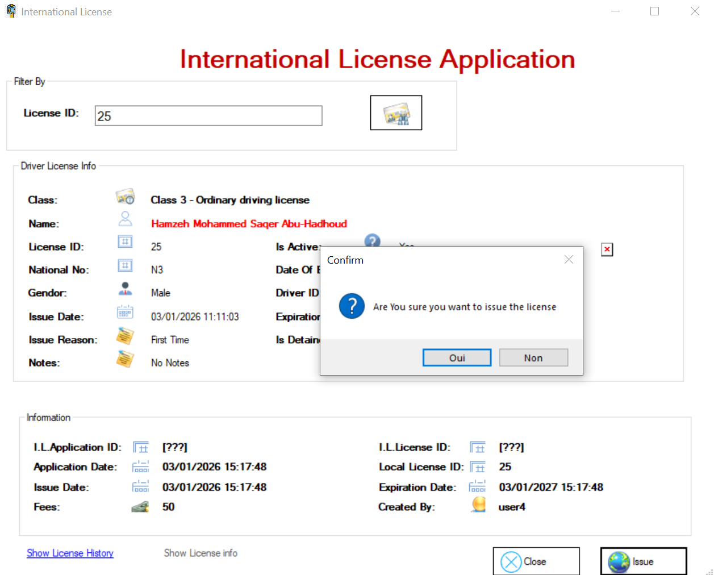
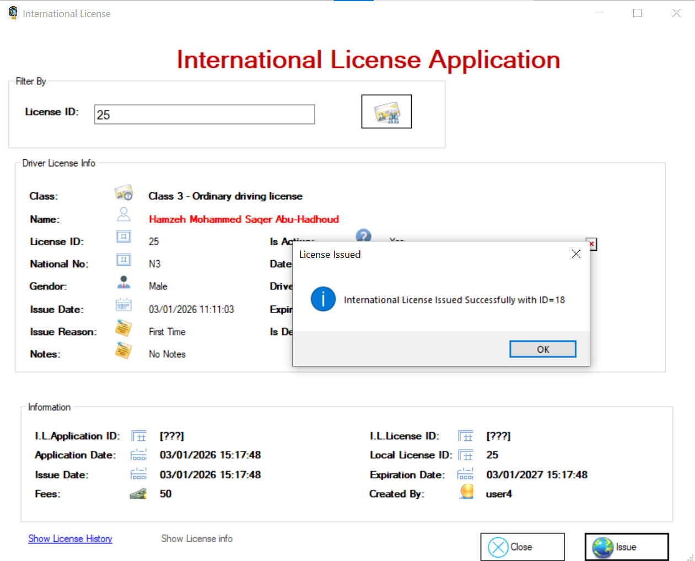
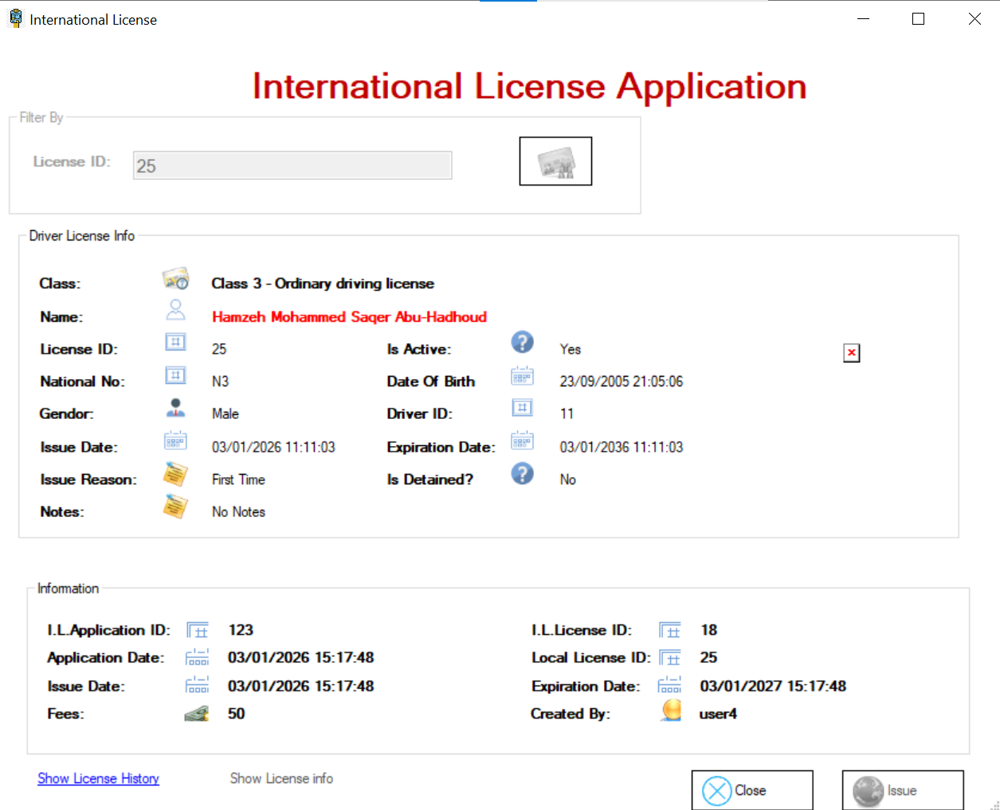
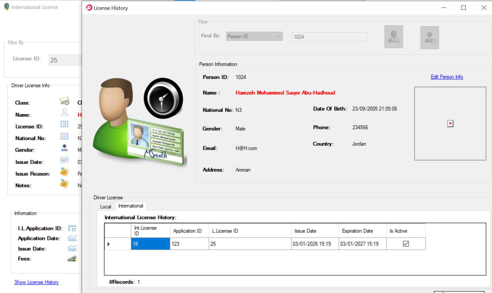

Lorsque je clique sur International License, cet écran apparaît.

Si le titulaire de ce permis possède déjà un permis de conduire international valide, je ne peux pas en délivrer un autre et l'option Issue an international driving permit restera désactivée.

Si une personne possède un permis de conduire inactif, il est impossible de lui délivrer un permis international , le bouton Issue reste désactivé.

Si une personne saisit un identifiant de licence incorrect, le message « Identifiant de licence introuvable » s'affiche et le bouton Issue reste désactivé.

Si une personne saisit un numéro de permis de conduire valide, les informations relatives au permis s'affichent et le bouton Issue est activé.

Et nous pouvons délivrer à cette personne une licence internationale



Lorsque nous cliquons sur le lien Show License History, l'écran « Historique des licences » apparaît et les informations sont affichées dans le tableau International License History

Remarque : Un permis de conduire international ne peut être délivré qu'avec un permis de conduire ordinaire.